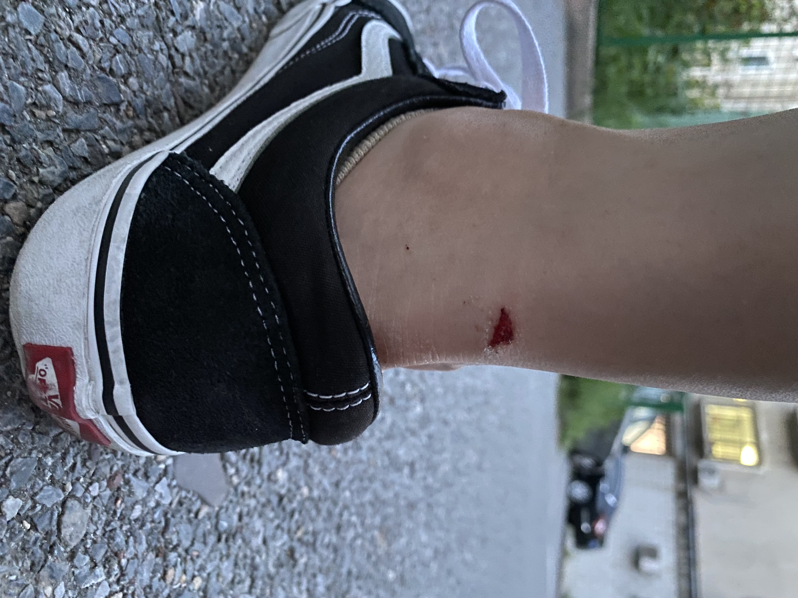
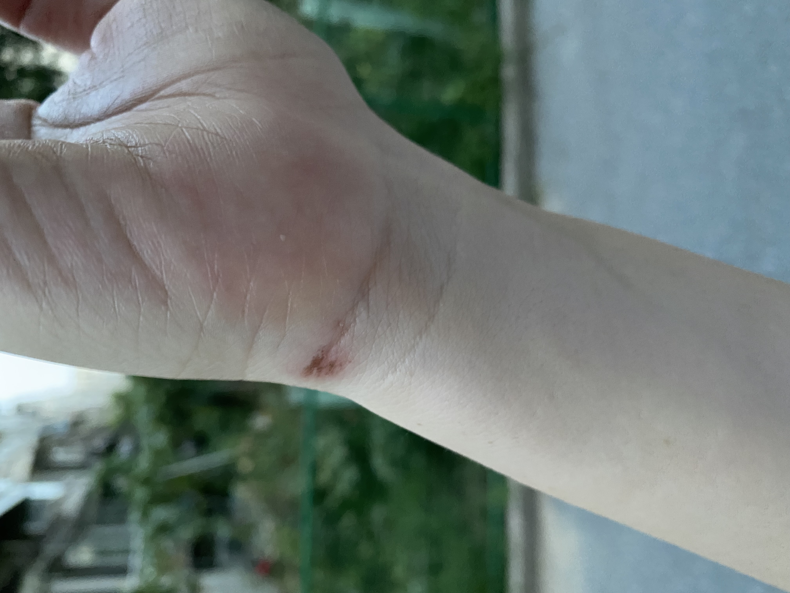
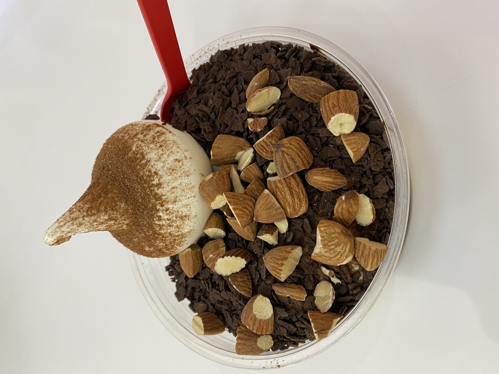
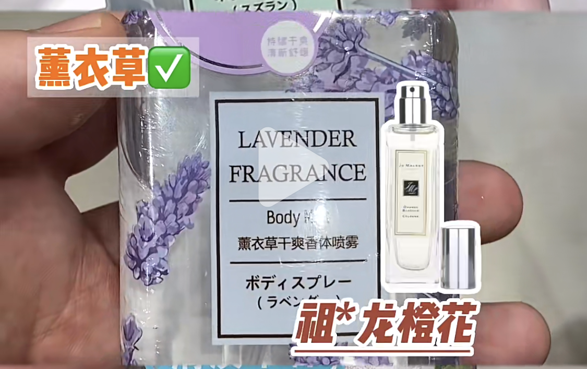
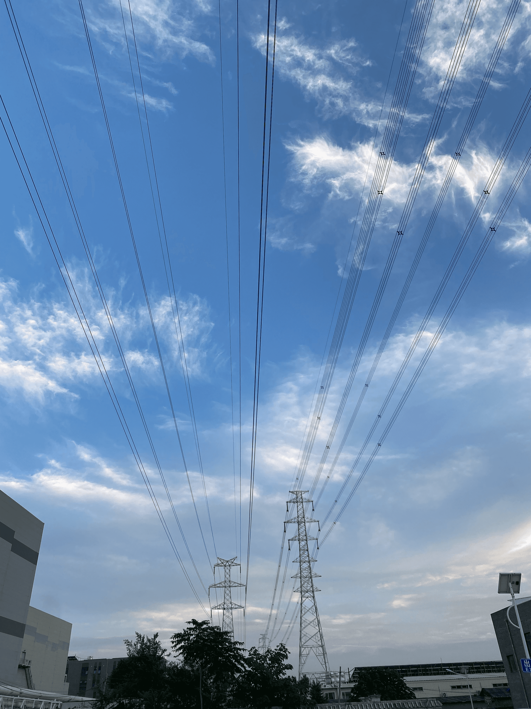
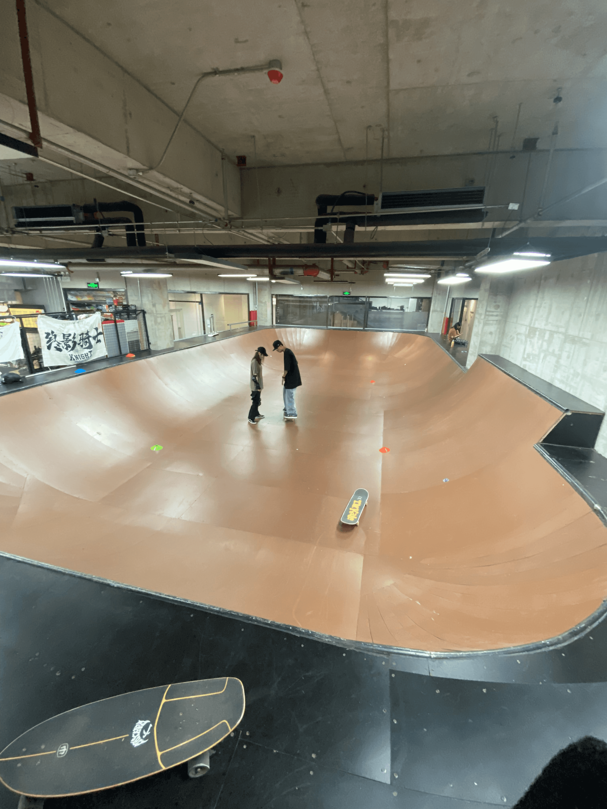
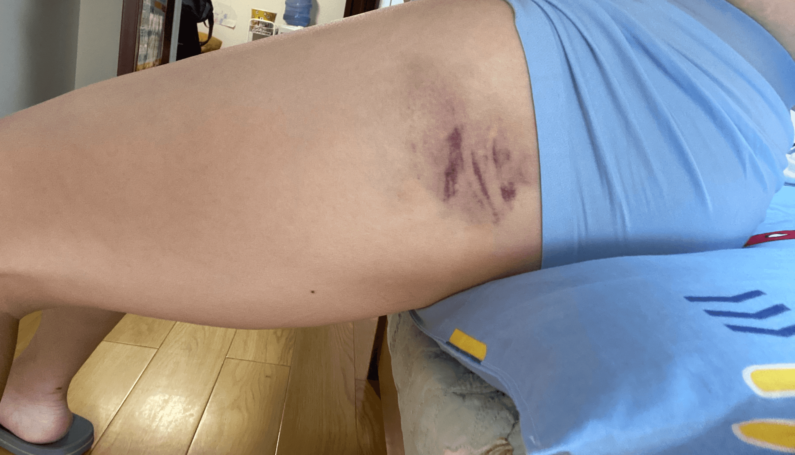
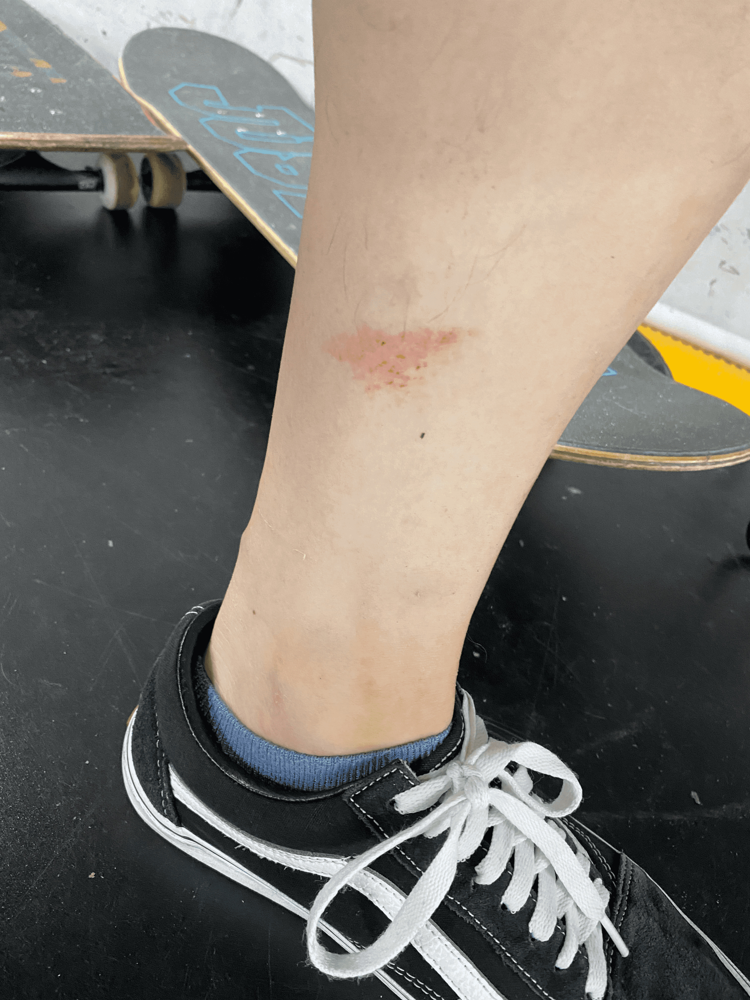
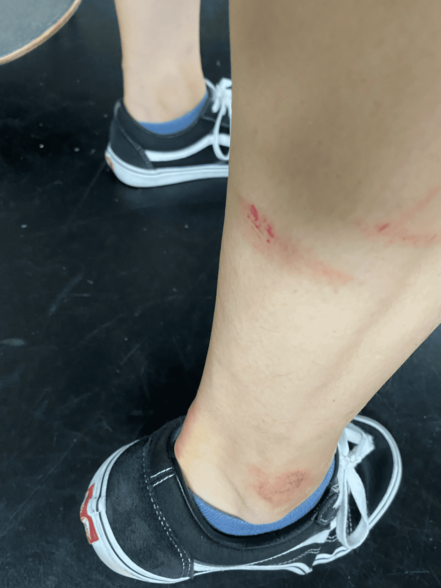

这周是学习陆地冲浪板的第六周，正常来说也应该是最后一周了（按照每周两次课来算），不过因为之前有一周只上了一次课，所以这周上完还剩最后一次课。
周六上课的前半段学习挥臂肩带转，我一直找不到感觉，做起来像是在自由泳。后半节课学习初级的 drop in，用了个大概 40 厘米的台子，摔了好几次也没学会，因为我这个教练的胳膊肘前段时间骑摩托车摔了，所以他不能拉着我从上往下冲，最后是等另一个教练下课后带我做了几次次找到了感觉。
来看下周六学习入门 drop in 的效果：
越恐惧越容易摔。
周六学习过程中受了点皮肉伤


下课后吃了个豪华冰淇淋聊以慰藉

然后还去 miniso 根据小红书上的推荐买了个薰衣草味的香水，打算以后没事也喷点香水让自己心情愉悦下

之后又去我常去的那个体育场练了 2 小时，这天的天气真好

然而噩梦发生在周日，本来计划周日休息一天，但是实在有些无聊，所以中午的时候和教练约了下午 2 点的课，到另一个有碗池的场地上课，这里的台子是标准 1 米 2 的，在这里练习 drop in 一次也没成功，而且一直摔，教练看我摔的是在有些惨，让我练会别的，尝试在斜面上做 pivot 180，成功了几次，也重重摔了几次，中间有两次摔的连话也说不出来（应该是震到心脏或者肺了），缓了好久。

现在心脏部位生疼，上半身不能大幅度活动，胳膊腿也又受了几处伤，胯骨的位置摔得一片紫



整个腿面上也是青一块紫一块

跟教练沟通了下，最后一节课还是用来改善体态吧，不学这高难度的了🥲
极限运动的归宿是骨科。🙂